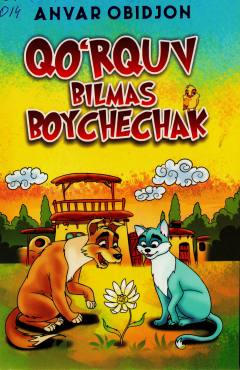

QBJasur qahramonlarning qiziqarli sarguzashtlari va qissalari jamlangan asar.
Ushbu kitobga yozuvchi Anvar Obidjonning qissalari, jumladan, „Qoʻrquv bilmas boychechak“ va „Oʻt yurakli avlodlar“ asarlari kiritilgan. Qissalarda jasur qahramonlarning sarguzashtlari, doʻstlik va ezgulik yoʻlidagi kurashlari qiziqarli tarzda hikoya qilinadi.